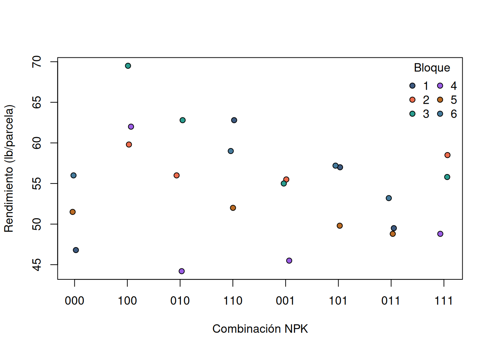
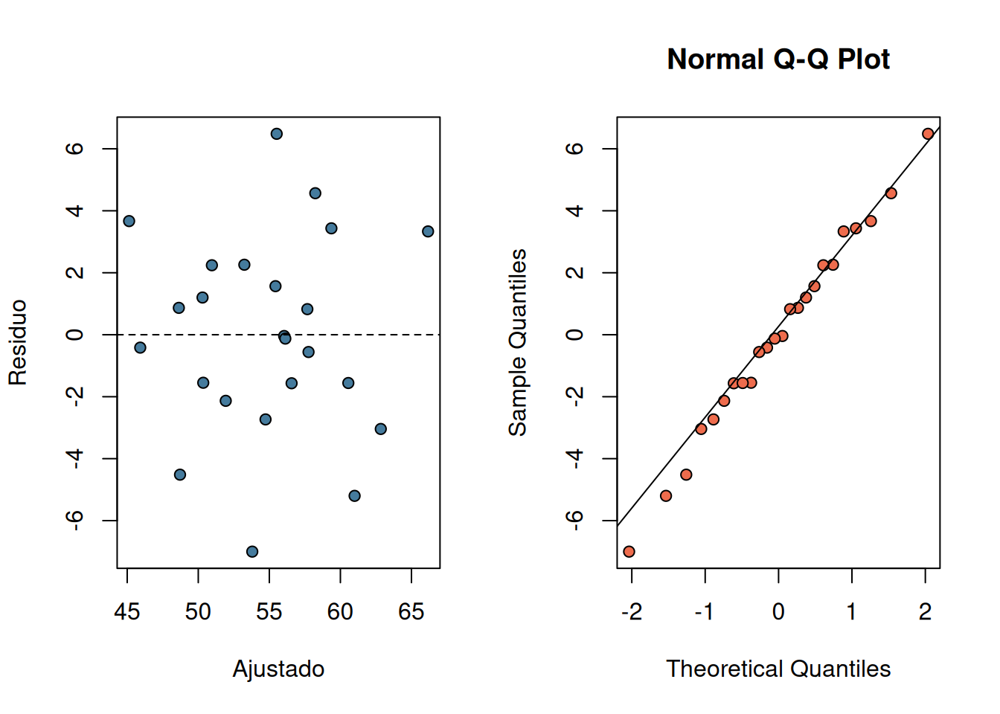

data("npk", package = "datasets")
d <- npk
stopifnot(nrow(d) == 24L, !anyNA(d), !anyDuplicated(rownames(d)))
stopifnot(all(d$yield > 0), nlevels(d$block) == 6L)
audit <- list(
dimensions = dim(d),
levels = lapply(d[c("block", "N", "P", "K")], levels),
units_per_block = table(d$block),
treatment_replication = xtabs(~ N + P + K, d)
)
audit
#> $dimensions
#> [1] 24 5
#>
#> $levels
#> $levels$block
#> [1] "1" "2" "3" "4" "5" "6"
#>
#> $levels$N
#> [1] "0" "1"
#>
#> $levels$P
#> [1] "0" "1"
#>
#> $levels$K
#> [1] "0" "1"
#>
#>
#> $units_per_block
#>
#> 1 2 3 4 5 6
#> 4 4 4 4 4 4
#>
#> $treatment_replication
#> , , K = 0
#>
#> P
#> N 0 1
#> 0 3 3
#> 1 3 3
#>
#> , , K = 1
#>
#> P
#> N 0 1
#> 0 3 3
#> 1 3 38 Estudios comparativos, intervenciones y sesgos
Diseño, estimandos y comparaciones ajustadas
Comparar grupos es sencillo; decidir qué significa la diferencia es más difícil. Una diferencia observada puede reflejar una intervención, selección de unidades, medición desigual, pérdidas o azar. El diseño determina qué comparación es defendible y el análisis debe conservar sus bloques, unidades y restricciones (Woodward 2014; Gerstman 2013).
8.1 Pregunta, diseño y estimando
Un estudio comparativo define antes de medir: población objetivo, condiciones, respuesta, unidad de asignación o selección, unidad de observación y periodo. En una intervención, la unidad experimental es la entidad que recibe una condición; varias mediciones dentro de ella son submuestras. En un estudio observacional no hay asignación controlada y una diferencia ajustada sigue siendo una asociación.
Sea \(Y_{ij}\) la respuesta de la unidad \(j\) bajo la condición \(i\). Un estimando simple es la diferencia de medias
\[ \Delta=\mu_1-\mu_0. \]
Debe indicarse si las medias describen unidades, áreas o individuos; si son condicionales a bloques; y sobre qué distribución de ambientes se promedian. Un cociente de medias responde otra pregunta y exige que el denominador sea positivo. La precisión no corrige un estimando mal definido (Lohr 2022).
8.2 Asignación, comparación y bloqueo
La asignación aleatoria hace comparables las condiciones en expectativa y da una base para atribuir diferencias a la intervención. La selección aleatoria, en cambio, sustenta la generalización a una población. Ninguna reemplaza a la otra. Sin información explícita sobre selección, el alcance se limita a las unidades estudiadas (Manly y Navarro Alberto 2015; Gregg 2008).
Un bloque reúne unidades parecidas antes de asignar condiciones. El contraste se realiza dentro de bloque y luego se combina:
\[ Y_{bj}=\alpha+\beta_b+\tau X_{bj}+\varepsilon_{bj}. \]
\(\tau\) es una diferencia ajustada por bloque si la respuesta es aproximadamente aditiva en esa escala. El bloqueo puede reducir variación ambiental, pero no crea réplicas adicionales ni permite ignorar bloque en el análisis. Si cada bloque no contiene todas las condiciones, solo son estimables comparaciones apoyadas por el patrón conjunto de asignación; conviene usar un modelo deliberadamente limitado.
8.3 Sesgos que alteran una comparación
- Selección: inclusión o permanencia relacionadas con condición y respuesta.
- Confusión: diferencias previas acompañan a la condición en estudios sin asignación aleatoria.
- Información: método, observador o precisión difieren entre condiciones.
- Pérdidas: faltantes posteriores dependen de condición o resultado.
- Contaminación: una unidad recibe parte de otra condición.
- Pseudorreplicación: submuestras se analizan como unidades asignadas.
- Reporte selectivo: se eligen respuestas o modelos después de ver resultados.
La prevención mediante diseño y protocolo es preferible a un ajuste posterior. Una auditoría debe conservar identificadores, asignación prevista y recibida, fechas, faltantes, exclusiones y cambios de medición (Woodward 2014).
8.4 Estimación, incertidumbre y diagnóstico
Una estimación necesita tamaño de efecto, incertidumbre y escala. En modelos lineales, el intervalo para un contraste combina variación residual con los grados de libertad disponibles. Con pocos bloques, aproximaciones asintóticas y remuestreos son frágiles; deben mostrarse los datos por bloque.
Los residuos permiten revisar no linealidad, varianza desigual y observaciones influyentes. No prueban aleatorización, ausencia de sesgo ni independencia. Una conclusión robusta conserva signo y magnitud ecológica bajo decisiones razonables: ajuste por bloque, exclusión de una unidad influyente o una escala alternativa.
8.5 Aplicación completa: intervención nutricional en guisantes
8.5.1 Procedencia, diseño y alcance
datasets::npk, distribuido con R, registra rendimiento de guisantes en libras por parcela de 1/70 acre. Se aplicaron nitrógeno (N), fosfato (P) y potasio (K) en seis bloques. La ayuda ?datasets::npk documenta 24 parcelas y cuatro combinaciones por bloque. Cada parcela es unidad experimental; el rendimiento es la respuesta; bloque representa heterogeneidad previa.
No están las ocho combinaciones dentro de cada bloque. Por ello, el análisis principal estima diferencias medias aditivas de cada nutriente, ajustadas por bloque y promediadas sobre la asignación del experimento. No se desarrolla una interpretación general de interacciones ni se extrapola a otras fincas, años o dosis. La procedencia no informa un marco probabilístico de fincas.
8.5.2 Importación y auditoría
La tabla tridimensional verifica replicación global, pero no demuestra que cada bloque sea completo. Esta comprobación evita atribuir al modelo una estructura que los datos no poseen.
8.5.3 Exploración por unidad y bloque
comb <- interaction(d$N, d$P, d$K, sep = "")
cols <- c("#3d5a80", "#ee6c4d", "#2a9d8f", "#9b5de5",
"#bc6c25", "#457b9d", "#6a994e", "#d62828")
plot(jitter(as.numeric(comb), amount = .07), d$yield,
pch = 21, bg = cols[as.numeric(d$block)], xaxt = "n",
xlab = "Combinación NPK", ylab = "Rendimiento (lb/parcela)")
axis(1, at = seq_along(levels(comb)), labels = levels(comb))
legend("topright", legend = levels(d$block), pt.bg = cols[1:6], pch = 21,
title = "Bloque", bty = "n", ncol = 2)
aggregate(yield ~ block, d, function(x) c(media = mean(x), rango = diff(range(x))))
#> block yield.media yield.rango
#> 1 1 54.025 16.000
#> 2 2 57.450 4.300
#> 3 3 60.775 14.500
#> 4 4 50.125 17.800
#> 5 5 50.525 3.200
#> 6 6 56.350 5.800
aggregate(yield ~ N + P + K, d, mean)
#> N P K yield
#> 1 0 0 0 51.43333
#> 2 1 0 0 63.76667
#> 3 0 1 0 54.33333
#> 4 1 1 0 57.93333
#> 5 0 0 1 52.00000
#> 6 1 0 1 54.66667
#> 7 0 1 1 50.50000
#> 8 1 1 1 54.36667La dispersión entre bloques justifica conservarlos. Las medias crudas por combinación son descriptivas y no sustituyen los contrastes ajustados.
8.5.4 Estimación de diferencias ajustadas
fit <- lm(yield ~ block + N + P + K, data = d)
coef_table <- summary(fit)$coefficients
effects <- coef_table[c("N1", "P1", "K1"), , drop = FALSE]
intervals <- confint(fit, parm = c("N1", "P1", "K1"), level = .95)
result <- data.frame(
nutrient = c("N", "P", "K"),
difference_lb_plot = effects[, "Estimate"],
standard_error = effects[, "Std. Error"],
lower = intervals[, 1], upper = intervals[, 2],
row.names = NULL
)
result
#> nutrient difference_lb_plot standard_error lower upper
#> 1 N 5.616667 1.633622 2.134683 9.0986504
#> 2 P -1.183333 1.633622 -4.665317 2.2986504
#> 3 K -3.983333 1.633622 -7.465317 -0.5013496
anova(fit)
#> Analysis of Variance Table
#>
#> Response: yield
#> Df Sum Sq Mean Sq F value Pr(>F)
#> block 5 343.29 68.659 4.2879 0.01272 *
#> N 1 189.28 189.282 11.8210 0.00366 **
#> P 1 8.40 8.402 0.5247 0.47999
#> K 1 95.20 95.202 5.9455 0.02767 *
#> Residuals 15 240.19 16.012
#> ---
#> Signif. codes: 0 '***' 0.001 '**' 0.01 '*' 0.05 '.' 0.1 ' ' 1Cada coeficiente compara presencia con ausencia del nutriente, manteniendo bloque y los otros dos indicadores en el modelo. Es una diferencia en libras por parcela, no un porcentaje ni una respuesta a cualquier dosis posible. La tabla ANOVA no debe reemplazar los tamaños de efecto y sus intervalos.
8.5.5 Incertidumbre respetando bloques
Como complemento se remuestrean bloques completos. Solo hay seis, de modo que el intervalo bootstrap es un diagnóstico de estabilidad, no una garantía de cobertura.
set.seed(808)
B <- 1999
boot_effects <- replicate(B, {
chosen <- sample(levels(d$block), replace = TRUE)
db <- do.call(rbind, lapply(seq_along(chosen), function(i) {
z <- d[d$block == chosen[i], ]
z$boot_block <- factor(i)
z
}))
coef(lm(yield ~ boot_block + N + P + K, db))[c("N1", "P1", "K1")]
})
boot_ci <- t(apply(boot_effects, 1, quantile, c(.025, .5, .975), na.rm = TRUE))
data.frame(nutrient = rownames(boot_ci), boot_ci, row.names = NULL)
#> nutrient X2.5. X50. X97.5.
#> 1 N1 2.608333 5.575000 8.767500
#> 2 P1 -4.191667 -1.166667 1.500000
#> 3 K1 -7.033333 -3.858333 -1.6083338.5.6 Diagnósticos
op <- par(mfrow = c(1, 2))
plot(fitted(fit), residuals(fit), pch = 21, bg = "#457b9d",
xlab = "Ajustado", ylab = "Residuo")
abline(h = 0, lty = 2)
qqnorm(residuals(fit), pch = 21, bg = "#ee6c4d")
qqline(residuals(fit))
par(op)
influence <- data.frame(
row = seq_len(nrow(d)), block = d$block,
combination = comb, cooks_distance = cooks.distance(fit)
)
influence[order(-influence$cooks_distance), ][1:5, ]
#> row block combination cooks_distance
#> 3 3 1 000 0.3264151
#> 13 13 4 100 0.2800082
#> 10 10 3 111 0.1801278
#> 2 2 1 110 0.1389225
#> 16 16 4 010 0.1358971Patrones curvos o de abanico cuestionarían la forma lineal y la varianza común. Una distancia de Cook alta señala dependencia del resultado, no autoriza borrar la parcela sin revisar el registro y el protocolo.
8.5.7 Sensibilidad analítica
Se compara el modelo primario con el análisis sin bloque y con seis análisis que omiten un bloque completo. Esto evalúa confusión por heterogeneidad espacial y dependencia de un bloque, sin inventar nuevas unidades.
unblocked <- coef(lm(yield ~ N + P + K, d))[c("N1", "P1", "K1")]
leave_block <- sapply(levels(d$block), function(b) {
coef(lm(yield ~ block + N + P + K, d[d$block != b, ]))[
c("N1", "P1", "K1")]
})
round(cbind(primary = coef(fit)[c("N1", "P1", "K1")],
unblocked = unblocked,
leave_block_min = apply(leave_block, 1, min),
leave_block_max = apply(leave_block, 1, max)), 2)
#> primary unblocked leave_block_min leave_block_max
#> N1 5.62 5.62 4.39 6.59
#> P1 -1.18 -1.18 -2.27 0.03
#> K1 -3.98 -3.98 -4.60 -2.638.5.8 Interpretación
El análisis identifica qué nutrientes muestran una diferencia ajustada grande y cuánta incertidumbre acompaña esa magnitud en estas 24 parcelas. La atribución a las aplicaciones depende de que la asignación descrita se haya ejecutado y de que no haya contaminación o medición diferencial. El diseño incompleto por bloque, las seis réplicas ambientales y la falta de dosis adicionales impiden concluir sobre interacciones generales, forma de la respuesta o transporte a otros ambientes. Una conclusión debe reportar diferencias e intervalos, y mencionar si cambian al retirar bloques o ignorar el ajuste.
8.6 Síntesis
- Diseño y estimando preceden al modelo.
- Asignación sustenta atribución; selección sustenta generalización.
- Bloques se conservan en estimación, incertidumbre y sensibilidad.
- Sesgos de selección, información y pérdidas no desaparecen con precisión.
- Diagnósticos evalúan el modelo, no validan retrospectivamente el diseño.
8.7 Actividad propuesta para el lector
Use datasets::InsectSprays, un experimento real distribuido con R sobre conteos de insectos bajo seis tratamientos. Consulte y registre su ayuda como procedencia; defina unidad, respuesta, condiciones, población alcanzable y diferencia de medias de interés; audite tamaño por tratamiento, ceros, faltantes y valores extremos; explore distribuciones y medias; estime contrastes seleccionados antes del ajuste con intervalos compatibles con conteos o con una justificación explícita de otra escala; diagnostique dispersión y observaciones influyentes; compare al menos dos decisiones razonables de modelación; e interprete magnitud, incertidumbre, sesgos posibles y límites de generalización.